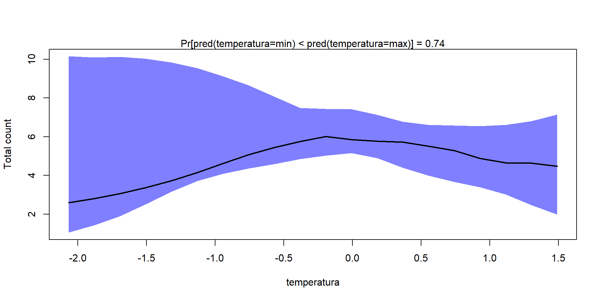
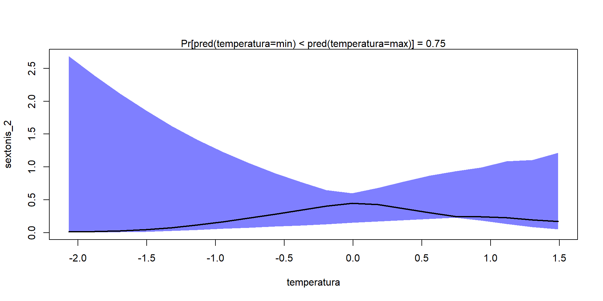

$RMSE
[1] 1.5144387 1.3791034 1.4098966 1.1696523 0.9650899 0.6398662 0.3680749
[8] 0.6264471 0.3343986 0.4799472
$SR2
[1] 3.810614e-01 4.249746e-01 -5.197951e-02 3.198194e-01 8.341205e-04
[6] 3.795843e-02 2.495264e-02 4.208243e-04 1.168956e-03 -1.728022e-05
$O.AUC
[1] 0.5 0.5 0.5 0.5 0.5 0.5 0.5 0.5 0.5 0.5
$O.TjurR2
[1] 0 0 0 0 0 0 0 0 0 0
$O.RMSE
[1] 0.5814019 0.5566499 0.8960005 0.8049145 0.9115843 0.9786452 0.9858149
[8] 0.9786452 0.9786452 0.9858149
$C.SR2
[1] 0.30099187 0.35105803 -0.08257464 0.11085573 -0.12676056 NA
[7] NA NA NA NA
$C.RMSE
[1] 1.62914733 1.41530211 1.60319749 1.77298697 0.57054672 1.10552206
[7] 0.31951761 0.06027818 0.35722294 0.21530368Modelos Jerárquicos de Comunidades de Especies en R
Hierarchical Models of Species Communities (HMSC)
2024-10-18
Una vez que tengamos un modelo sólido. Nos interesa ver que papel juegan las variables ambientales en las especies/comunidades.

Como en los Modelos de Distribución de Especies, podemos calcular curvas de respuesta de cada especie/comunidad a las variables ambientales
temperatura materia_org salinidad ph
1 -2.065315281 -0.1667234554 -0.501380262 0.37285247
2 -1.878146837 -0.1516142030 -0.455942859 0.33906285
3 -1.690978393 -0.1365049507 -0.410505456 0.30527323
4 -1.503809949 -0.1213956984 -0.365068052 0.27148361
5 -1.316641505 -0.1062864460 -0.319630649 0.23769400
6 -1.129473060 -0.0911771937 -0.274193245 0.20390438
7 -0.942304616 -0.0760679413 -0.228755842 0.17011476
8 -0.755136172 -0.0609586890 -0.183318438 0.13632514
9 -0.567967728 -0.0458494366 -0.137881035 0.10253552
10 -0.380799284 -0.0307401843 -0.092443632 0.06874590
11 -0.193630840 -0.0156309320 -0.047006228 0.03495628
12 -0.006462395 -0.0005216796 -0.001568825 0.00116666
13 0.180706049 0.0145875727 0.043868579 -0.03262296
14 0.367874493 0.0296968251 0.089305982 -0.06641258
15 0.555042937 0.0448060774 0.134743386 -0.10020220
16 0.742211381 0.0599153298 0.180180789 -0.13399182
17 0.929379825 0.0750245821 0.225618193 -0.16778144
18 1.116548270 0.0901338344 0.271055596 -0.20157106
19 1.303716714 0.1052430868 0.316492999 -0.23536068
20 1.490885158 0.1203523391 0.361930403 -0.26915030
[1] 0.74
[1] 0.7425